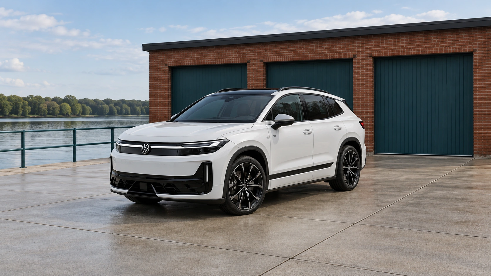

Latest news / Volkswagen
2028 Volkswagen ID. Tiguan: What to Know About the ID.4 Successor
Expected in the U.S. for the 2028 model year, the ID. Tiguan brings a familiar name and physical controls to VW’s electric SUV. American pricing and EPA range remain unannounced.